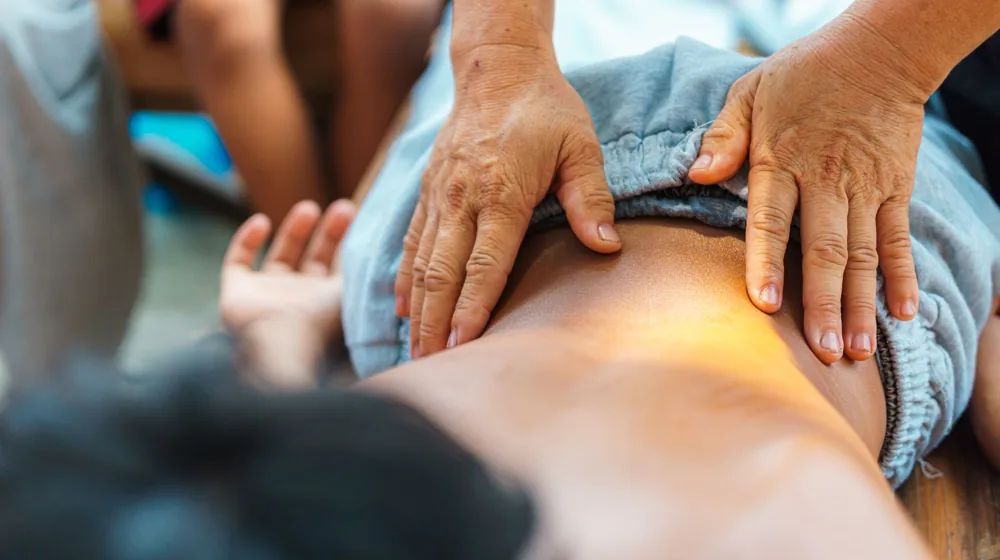

한방 힐링 프로그램, 나에게 맞는 곳은? 핵심 체크리스트로 알아보세요!
사진: Tima Miroshnichenko / Pexels (무료 이미지, 출처 표기)
한방 힐링 프로그램, 왜 주목받을까요?

바쁜 현대인의 삶은 스트레스와 만성 피로를 선물합니다. 이때 몸과 마음의 균형을 되찾기 위해 많은 분이 한방 힐링 프로그램에 관심을 기울이고 있습니다. 단순히 쉬는 것을 넘어, 우리 몸의 근본적인 회복과 체질 개선을 돕는다는 점에서 한방 힐링은 더욱 특별합니다.
한방 힐링은 개인의 체질과 건강 상태에 맞춰 처방된 한약, 침, 뜸, 부항 등 한방 치료는 물론, 명상, 요가, 식이요법 등 다양한 요소를 결합하여 심신의 조화를 추구합니다. 덕분에 일시적인 증상 완화를 넘어, 건강한 생활 습관을 형성하고 질병을 예방하는 데 실질적인 도움을 얻을 수 있습니다.
나에게 맞는 한방 힐링 프로그램 종류
다양한 한방 힐링 프로그램 중 나에게 꼭 맞는 것을 찾으려면, 먼저 어떤 종류가 있는지 파악하는 것이 중요합니다. 주로 스트레스 해소, 면역력 증진, 특정 질환 관리 등 개인의 목표에 따라 프로그램의 구성이 달라집니다.
각 유형별 특징을 확인하여 본인의 건강 목표와 가장 부합하는 프로그램을 선택하는 것이 중요합니다. 예를 들어, 단순 휴식을 원한다면 심신 안정 프로그램이, 만성적인 몸의 불편함을 해소하고 싶다면 디톡스나 통증 관리 프로그램이 적합할 수 있습니다.
성공적인 한방 힐링을 위한 핵심 체크리스트
만족스러운 한방 힐링 경험을 위해서는 다음 체크리스트를 활용하여 신중하게 프로그램을 선택해야 합니다. 무작정 인기 있는 프로그램을 따라가기보다는 자신에게 맞는 요소를 꼼꼼히 따져보세요.
- 개인의 건강 상태 및 목표 명확화: 스트레스 해소, 체중 관리, 특정 통증 완화 등 어떤 목적을 가지고 있는지 구체적으로 정해야 합니다.
- 프로그램 구성 및 기간 확인: 단기 체험형인지, 장기적인 관리를 제공하는지, 어떤 치료와 활동이 포함되는지 상세히 확인하세요.
- 전문성 있는 의료진 여부: 한의사, 전문 상담사 등 숙련된 전문가가 상주하며 개인별 맞춤 상담과 치료를 제공하는지 중요합니다.
- 시설 및 환경 점검: 위생적이고 쾌적한 시설인지, 자연 친화적인 환경에서 편안하게 휴식할 수 있는지 확인하는 것이 좋습니다.
- 이용 후기 및 평판 확인: 다른 이용자들의 실제 경험담을 참고하여 프로그램의 만족도와 효과를 간접적으로 파악할 수 있습니다.
- 접근성과 편의성 고려: 프로그램 장소가 너무 멀거나 이동이 불편하면 꾸준한 참여가 어려울 수 있으니 접근성도 중요합니다.
- 예산과의 적합성: 프로그램 비용이 자신의 예산 범위 내에 있는지 확인하고, 추가 비용이 발생할 수 있는 부분은 없는지 문의해야 합니다.
한방 힐링 프로그램, 기대 효과와 실제 비용은?
한방 힐링 프로그램 참여를 통해 기대할 수 있는 효과는 다양합니다. 개인차는 있지만, 보통 면역력 증진, 만성 통증 완화, 심신 안정, 숙면 유도, 소화 기능 개선 등 전반적인 신체 및 정신 건강 증진에 도움을 받을 수 있습니다. 특히 스트레스로 인한 불안감이나 우울감 완화에도 긍정적인 영향을 미칩니다.
프로그램 비용은 구성, 기간, 시설 수준에 따라 천차만별입니다. 2026년 9월 기준으로, 1일 체험 프로그램은 10만 원대부터 시작하며, 2박 3일 또는 3박 4일 패키지는 50만 원에서 100만 원 이상까지 다양하게 형성되어 있습니다. 장기 숙박을 포함한 집중 프로그램은 그보다 높은 비용이 발생할 수 있습니다. 정확한 사항은 각 기관의 공식 홈페이지나 상담을 통해 다시 확인하시길 권장합니다.
프로그램 참여 전 꼭 알아둘 주의사항
안전하고 효과적인 한방 힐링을 위해 몇 가지 주의사항을 숙지하는 것이 좋습니다. 다음 사항들을 미리 확인하여 불필요한 문제를 예방하세요.
- 개인 건강 상태 사전 고지: 알레르기, 특정 질환(고혈압, 당뇨 등), 복용 중인 약물이 있다면 반드시 프로그램 시작 전 의료진이나 상담사에게 상세히 알려야 합니다.
- 과도한 기대 금지: 한방 힐링은 단기간에 극적인 효과를 보기보다는 꾸준한 노력과 실천을 통해 점진적인 변화를 추구합니다. 현실적인 기대를 가지고 참여하는 것이 중요합니다.
- 환불 및 변경 규정 확인: 부득이하게 프로그램을 취소하거나 변경해야 할 경우를 대비하여 각 기관의 환불 및 변경 정책을 미리 확인해두는 것이 좋습니다.
- 공신력 있는 기관 선택: 검증되지 않은 곳보다는 한의원이나 정부 및 지자체에서 운영 또는 인증한 전문 기관을 선택하는 것이 안전합니다.
Q&A: 한방 힐링, 자주 묻는 질문
한방 힐링 프로그램에 대해 자주 궁금해하는 질문들을 모아 답변해 드립니다.
- Q: 한방 치료 경험이 없어도 괜찮을까요?
A: 네, 괜찮습니다. 대부분의 한방 힐링 프로그램은 한방 치료에 익숙하지 않은 분들도 쉽게 접근할 수 있도록 구성되어 있습니다. 사전 상담을 통해 개인별 맞춤 프로그램을 안내받을 수 있습니다. - Q: 어떤 사람이 한방 힐링 프로그램에 적합한가요?
A: 만성 피로, 스트레스, 소화 불량, 불면증 등으로 일상생활의 활력을 잃었거나, 특정 질환의 예방 및 관리에 관심 있는 분들께 특히 추천합니다. 몸과 마음의 균형을 찾고 싶은 모든 분께 열려 있습니다. - Q: 프로그램 후에도 효과를 유지하려면 어떻게 해야 할까요?
A: 프로그램에서 배운 생활 습관(식이요법, 운동, 명상 등)을 꾸준히 실천하는 것이 중요합니다. 담당 한의사나 상담사의 조언을 참고하여 자신에게 맞는 건강 관리 루틴을 만드는 것이 효과 유지에 큰 도움이 됩니다.
🔗 이 글도 함께 보면 좋아요: 한방 웰니스, 초보자도 일상에서 쉽게 시작하는 법 (feat. 핵심 가이드)
관련 추천 상품
한방차 세트, 아로마 오일, 명상 방석 관련 인기 상품 보러가기
이 포스팅은 쿠팡 파트너스 활동의 일환으로, 이에 따른 일정액의 수수료를 제공받습니다.